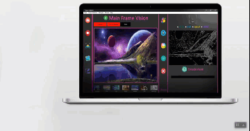
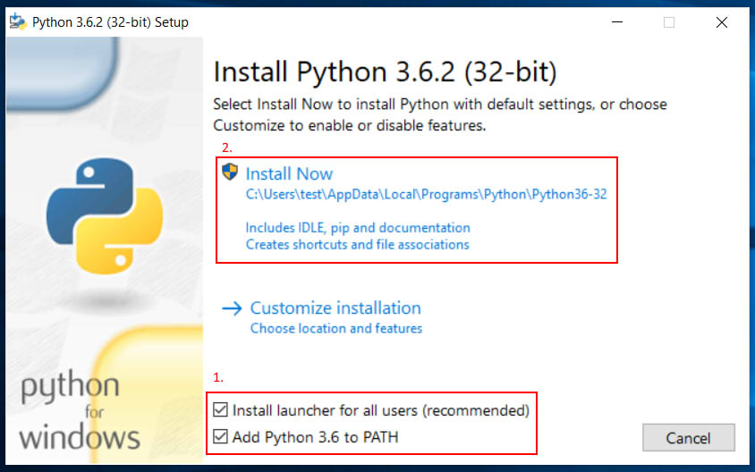
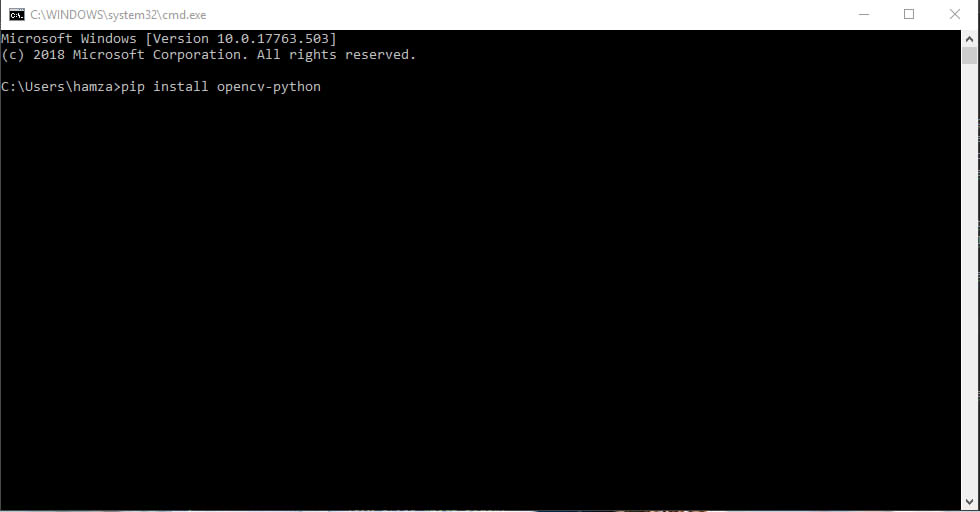
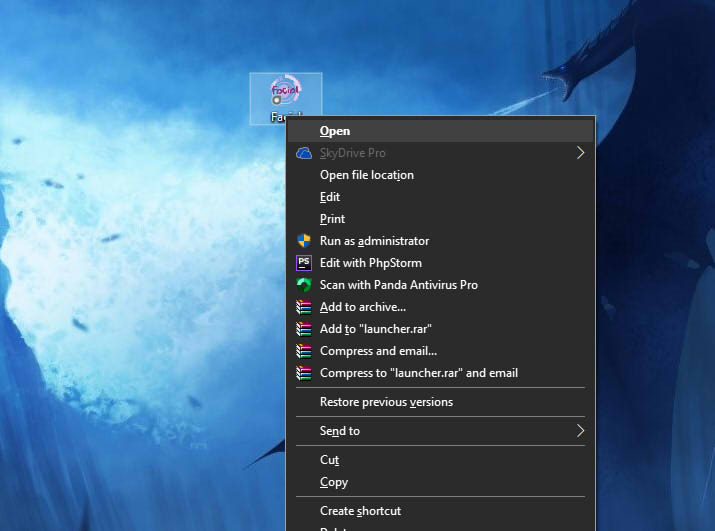
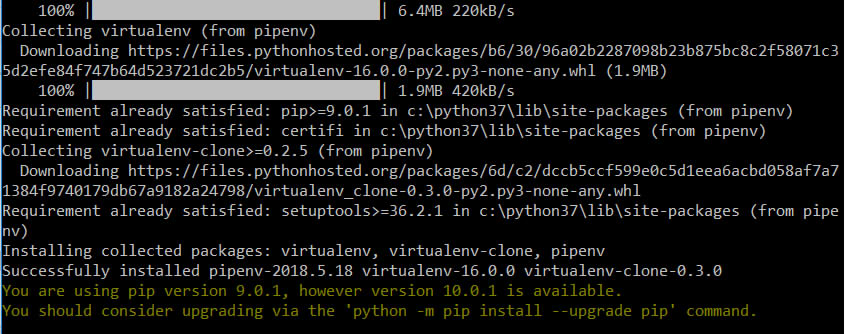

Facial : Application de détection et reconnaissance faciale

La version web de notre rapport d'application facial, créé par nous
pour aider les lecteurs à faire l'expérience d'une vue flexible et d'un affichage interactif,
vous pouvez découvrir des sujets tout en les lisant et les explorer, commencez dès maintenant
par télécharger notre application.
La vision par ordinateur (aussi appelée vision artificielle ou vision numérique)
est une branche de l'intelligence artificielle dont le principal but est de permettre à une
machine d'analyser, traiter et comprendre une ou plusieurs images prises par un système
d'acquisition
Python
Python est un langage de programmation, dont la première version est
sortie en 1991. Créé par Guido van Rossum, il a voyagé du Macintosh de son créateur, qui
travaillait à cette époque au Centrum voor Wiskunde en Informatica aux Pays-Bas, jusqu'à se
voir associer une organisation à but non lucratif particulièrement dévouée, la Python Software
Foundation, créée en 2001. Ce langage a été baptisé ainsi en hommage à la troupe de comiques
les « Monty Python ».
Python est un langage de programmation interprété, multi-paradigme
et multiplateformes. Il favorise la programmation impérative structurée, fonctionnelle et
orientée objet. Il est doté d'un typage dynamique fort, d'une gestion automatique de la mémoire
par ramasse-miettes et d'un système de gestion d'exceptions ; il est ainsi similaire à
Perl, Ruby, Scheme, Smalltalk et Tcl.
Installer Python
L'installation de Python est très facile, aussi bien sous Windows
que sous les systèmes Unix. Quel que soit votre système d'exploitation, vous devez vous rendre
sur le site officiel de Python ou utilisez ce lien pour
télécharger la même version que nous
Python 3.7.0
NB: notre application est compatible avec python 3.7+
Après le téléchargement, ouvrez le fichier exécutable, une boîte de
dialogue devrait apparaître

Pour plus de details sur l'installation du Python vous pouvez
consulter Ce Lein
Python peut être utilisé sur un serveur pour créer des applications Web. ... Notre outil
"Show Python" facilite l'apprentissage de Python, il affiche à la fois le code et le résultat.
Java vs Python en 2019. Java et Python présentent de nombreuses similitudes. ...
Les deux langages sont compilés en bytecode, mais Python est (généralement) compilé au
moment de l'exécution. Ils sont tous deux membres de la famille Algol, bien que Python
s'écarte plus de C / C ++ que Java
OpenCV : Computer Vision
OpenCV (pour Open Computer Vision) est une bibliothèque graphique
libre, initialement développée par Intel, spécialisée dans le traitement d'images en temps réel.
La société de robotique Willow Garage et la société ItSeez se sont succédé au support de cette
bibliothèque. Depuis 2016 et le rachat de ItSeez par Intel, le support est de nouveau assuré
par Intel.
Fonctionnalités
La bibliothèque OpenCV met à disposition de nombreuses fonctionnalités
très diversifiées permettant de créer des programmes partant des données brutes pour aller
jusqu'à la création d'interfaces graphiques basiques.
OpenCv peut aussi effectuer plusieurs Traitements : Traitement d'images,
Traitement vidéos, Algorithmes d'apprentissages, Calculs Matriciels...
Installer OpenCV
Pour Installer OpenCV sous Python Cliquez sur Win R puis tapez cmd,
quand terminal apparaît, tapez pip install opencv-python

Si vous rencontrez des problèmes lors de l'installation, notre application peut installer
OpenCV et tous les modules nécessaires au premier démarrage.
Pour plus de details sur l'installation du OpenCv vous pouvez
consulter Ce Lein
Cours d'IA par OpenCV - Campagne Kickstarter. 6 mai 2019. Aperçu OpenCV.org, en partenariat
avec Big Vision LLC (propriétaire de LearnOpenCV.com) a ...
Dans ce didacticiel d'introduction, vous apprendrez à segmenter simplement un objet à partir
d'une image basée sur une couleur en Python à l'aide d'OpenCV. Populaire ...
Ce tutoriel va vous présenter le concept de détection d'objet en Python à l'aide de
la bibliothèque OpenCV et comment vous pouvez l'utiliser pour ...
Facial : Appplication de détection et reconaissance
OpenCV et Python offrent de nombreuses fonctionnalités, dont la
détection et la reconnaissance d'objets. Facial est une application crée par nous avec python
et OpenCV pour réaliser de grandes tâches en utilisant la détection et la reconnaissance d'objets
Sous la supervision et l'encadrement du Dr Ahmed Drissi el maliani
Installer Facial
Vous pouvez télécharger l'application facial à partir des liens source
ci-dessous.
Après télécharger le fichier FSetup.exe, lancez le, la boîte de dialogue suivant va être affichée
Clicker sur Suivant et lancer l'installation, après quelques minutes
l'application sera installée et un raccourci sera créé sur votre bureau
Exécuter Facial
Allez sur votre bureau et ouvrez l'application facial.exe

L'application se lancera pour la première fois et commencera à
télécharger tous les packages depuis un terminale

Le processus d'installation peut prendre un certain temps avant qu'il
télécharge et copie toutes les données dans site-packages du dossier python, puis
l'application serait prête à démarrer.
Une série de fonctions pratiques permettant de simplifier les fonctions de traitement
d’images telles que la traduction, la rotation, le redimensionnement, la squelettisation,
l’affichage des images Matplotlib, le tri des contours, la détection des contours, et bien
plus encore avec OpenCV et Python 2.7 et Python 3.
Le paquetage fondamental pour l'informatique matricielle avec Python
Si une erreur survient lors de la tentative de téléchargement et
d'installation de l'un de ces packages, essayez de l'installer manuellement à l'aide de la
commande pip install